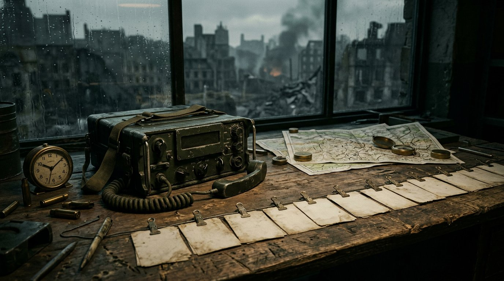

L’index officiel des notes BSG, récupéré directement, affiche 1.3.0.0 (29 octobre) comme dernière note numérotée. Le journal développeur BSG daté du 18/11 prévoit 1.3.5.0 pour la seconde moitié de novembre, sans jour précis ni annonce d’installation : c’est une fenêtre annoncée, pas une confirmation que le patch est sorti ou installé. BSG avait aussi confirmé une mise à jour technique le 13 novembre sans numéro. Vérifier l’annonce de maintenance, le Launcher et l’écran de version avant d’appliquer un conseil.
01 Jalons officiels et publications datées
Chronologie 1.0 → annonces 1.3.5.0
Sélection des jalons et annonces BSG vérifiés jusqu’au 18 novembre 2026. Les notes, journaux développeur, dates de publication et installations sont distingués; le statut du client n’est pas inféré.
L’index officiel des notes BSG, récupéré directement, affiche 1.3.0.0 (29 octobre) comme dernière note numérotée. Le journal développeur BSG daté du 18/11 prévoit 1.3.5.0 pour la seconde moitié de novembre, sans jour précis ni annonce d’installation : c’est une fenêtre annoncée, pas une confirmation que le patch est sorti ou installé. BSG avait aussi confirmé une mise à jour technique le 13 novembre sans numéro. Vérifier l’annonce de maintenance, le Launcher et l’écran de version avant d’appliquer un conseil.
Date de sortie annoncée par BSG en août 2025 et confirmée par la fiche Steam. Le communiqué du 22 août est une annonce préalable, pas une note publiée le jour du lancement.
Premier correctif numéroté retenu après la sortie 1.0. La chronologie s’appuie sur l’index et le lien BSG; ouvrir les notes originales pour le détail complet plutôt que reprendre des spéculations de joueurs.
Bascule de saison vers l’hiver et série de correctifs post-lancement. La liste exhaustive et les cas corrigés sont dans l’annonce Steam BSG.
Améliorations de retour sur le matchmaking, arrivée du M110 et événement Kolotun. BSG distingue la date de la note de celle de l’annonce d’installation; l’événement est décrit dans les notes originales.
Rich Presence Steam, ajustements de lancement des serveurs de raid et changements de contenu/équilibrage. Une note de patch n’implique pas que chaque correction se comporte de façon identique sur chaque machine.
Nouvelles optimisations des processus de raid et du retour post-raid, ainsi que des ajustements d’armes et corrections. Consulter la note BSG pour les détails par mode.
L’index BSG date l’article du 26 mars; le compte officiel a annoncé l’installation le 27 mars. La ligne conserve ces deux dates sans résumer des détails qui doivent être vérifiés dans la note originale.
Optimisations des écrans hors raid et du retour de raid, changements de culling sur certains lieux, protection de progression en PvE local et deuxième étape de rééquilibrage de pièces d’armes. Les gains de performance dépendent du PC et des réglages.
L’index BSG liste la note 1.0.4.9 au 19 mai; l’installation a été annoncée terminée ce jour-là. Les détails de la note n’ont pas été récupérés dans cette revue : ne pas en déduire de bonus ni d’impact gameplay.
Ajout d’Icebreaker et du chapitre Boreas : lieu séparé pour 1 à 3 joueurs contre l’IA, en solo ou en groupe préformé, sans matchmaking aléatoire. La note contient aussi des ajustements de tâches et des correctifs.
Préparation technique de l’Expansion Hub et recherche de tâches ajoutée à l’interface. BSG précise que le Hub n’est pas disponible immédiatement après l’installation de cette version.
Annonce BSG distincte qui décrit l’arrivée de l’Expansion Hub et de TarCoin. Ne pas confondre la préparation du patch 1.0.6.0 avec la mise en service annoncée ensuite.
Ajout du personnage Seasonal et lancement de Season 1, Kord Breach, avec des règles distinctes des personnages PvP/PvE permanents. Les resets et récompenses sont ceux de la note de saison.
Refonte de Lighthouse et accès à Icebreaker depuis Shoreline ou Lighthouse au moyen du kit Sudak-tudak à usage unique. La page BSG est datée du 7 septembre; l’index et l’annonce d’installation situent le déploiement au 8.
Annonce Steam BSG des Leagues pour personnages saisonniers. Ne pas appliquer automatiquement ce système aux personnages permanents ou au PvE.
BSG signale des extractions PMC/Scav ajustées, des changements de loot et de clés à Customs, de nouveaux emplacements de loot et corrections de géométrie à Interchange, et un audio environnemental revu à Shoreline. La note ne nomme pas toutes les extractions concernées.
Patch officiel associé à l’événement Halloween et à des changements de progression/compétences. Cette mention situe la dernière note numérotée vue dans l’index BSG au 18 novembre; elle ne certifie pas le build installé.
BSG annonce des ajustements d’équilibrage, dont des changements de tâches saisonnières, Black Division et Wedge. Les valeurs non indiquées par BSG ne sont ni déduites ni inventées.
Le canal Telegram EN de BSG confirme une mise à jour technique et invite à la télécharger via le Launcher. Le message consulté ne donne pas de numéro; un numéro observé sur un wiki communautaire n’est pas attribué à BSG.
Vérification du 18 novembre 2026 : le journal développeur BSG daté du 18/11 prévoit 1.3.5.0 pour la seconde moitié de novembre, sans jour précis ni annonce d’installation. L’index officiel des notes récupéré directement conserve 1.3.0.0 (29 octobre) comme dernière note numérotée. BSG annonce Unity 6, la connexion au serveur en parallèle du chargement, une meilleure libération de RAM après raid, une stabilité serveur accrue, une meilleure fluidité et une reconnexion rapide. DirectX 12, DLSS Frame Generation x2/x4 et NVIDIA Reflex sont futurs; la végétation est reportée et FSR 4 visé avant fin 2026.

02 Annonces et versions
Ce qui est prévu, installé ou seulement rapporté
La roadmap sert à préparer la veille, pas à décrire des fonctionnalités déjà présentes dans le jeu.
Dernière note numérotée affichée · 29 octobre
1.3.0.0
L’index BSG récupéré directement le 18 novembre la présente toujours comme la plus récente note de patch numérotée. Cela ne confirme pas à lui seul le build installé sur chaque client.
Message officiel · 13 novembre
Mise à jour technique sans numéro
Le canal BSG confirme l’installation, mais le message cité ne donne aucun identifiant de version. Les numéros publiés par un wiki restent communautaires.
Journal développeur · 18 novembre
1.3.5.0 annoncée, date et installation non confirmées
BSG la prévoit pour la seconde moitié de novembre, sans jour précis. Unity 6, la connexion au serveur en parallèle du chargement, la libération de RAM après raid, la stabilité serveur, une meilleure fluidité et une reconnexion rapide sont annoncés. DirectX 12, DLSS Frame Generation x2/x4 et NVIDIA Reflex sont des travaux futurs; la végétation est reportée et FSR 4 visé avant fin 2026. À la vérification du 18/11, aucune annonce BSG d’installation n’a été trouvée.
Une fenêtre prévue, un journal développeur, une maintenance sans numéro et un numéro de build communautaire sont quatre éléments différents. Les étiquettes de cette page les séparent explicitement.
03 Mise à niveau · conseils pratiques
Upgrade — Prepare 1.3.5.0 avant la mise à jour
Une checklist prudente, distincte des consignes BSG : aucun jour de sortie ni installation de 1.3.5.0 n’est confirmé dans les sources vérifiées au 18 novembre 2026.
Le journal BSG donne seulement une fenêtre — seconde moitié de novembre. Il ne publie ni jour/heure de maintenance, ni taille de téléchargement, ni prérequis système ou procédure spéciale de préparation. Les étapes ci-dessous sont des précautions pratiques du guide, pas des exigences BSG.
Avant l’annonce de maintenance
Préparez vos repères
Surveillez les notes BSG et le Launcher officiel. Notez ou capturez vos réglages graphiques et raccourcis actuels pour pouvoir les comparer après la mise à jour. Gardez l’espace libre requis par le Launcher; aucun chiffre de stockage n’est fourni dans le journal.
Pendant l’installation
Utilisez la source officielle
Attendez l’annonce de maintenance et installez uniquement avec le Launcher officiel. Ne prenez pas un numéro de build de wiki ou de vidéo pour confirmation BSG; aucune réinstallation, purge de cache ou modification de pilote n’est donnée comme prérequis.
Après la mise à jour
Vérifiez avant de conclure
Confirmez la version affichée par le Launcher/client et lisez la note de patch BSG. Comparez la fluidité avec vos réglages habituels et changez une variable à la fois si vous faites des essais; les gains annoncés ne sont pas une garantie identique sur chaque PC.
DirectX 12, DLSS Frame Generation x2/x4 et NVIDIA Reflex relèvent des travaux futurs du journal; la nouvelle végétation est reportée. Ne modifiez pas vos réglages pour les considérer comme disponibles dans 1.3.5.0.
04 Méthode
Comment lire ces dates
Les filtres réduisent l’affichage sans supprimer les lignes de la page lorsque JavaScript est désactivé.
Source primaire
Pour les dates et changements annoncés, ouvrir les notes BSG/Steam ou le message officiel associé. Une note prouve ce qui a été publié, pas nécessairement le résultat sur chaque machine.
Source communautaire
Le wiki EFT rapporte des builds 1.3.0.1/1.3.0.2. Le message BSG du 13 novembre ne nomme pas le build. Ces numéros ne sont donc pas attribués à BSG ici.
Certains résultats donnent la date de l’article un jour avant l’annonce de maintenance. La chronologie conserve cette différence; elle n’infère pas l’heure du déploiement.
REF Relecture du 18 novembre
Sources, types et limites
Les liens BSG/Steam servent à établir les notes et annonces. Les wikis, outils, forums, réseaux de joueurs et vidéos sont secondaires et ne prouvent pas à eux seuls l’état du client.
- primaireBattlestate Games — index officiel des notes de patch EFT
Index officiel récupéré directement le 18/11/2026 : la dernière note de patch numérotée affichée est 1.3.0.0, datée du 29/10/2026; aucune note 1.3.5.0 ne figure dans la rubrique à cette date. L’index ne permet pas de connaître le build installé par chaque client et peut ne pas lister les correctifs techniques sans numéro.
Vérifié par récupération directe le 18 novembre 2026; 1.3.0.0 reste en tête de la rubrique des notes de patch. - primaireBattlestate Games — annonces officielles Steam
Fil officiel d’annonces BSG sur Steam récupéré directement le 18/11/2026 : l’entrée pertinente la plus récente est le journal développeur daté du 18/11, qui prévoit 1.3.5.0 pour la seconde moitié de novembre. Le fil consulté ne contient pas d’annonce de démarrage ou de fin d’installation de 1.3.5.0; le journal est une annonce, pas une note de déploiement.
Fil et annonce du 18 novembre 2026 récupérés directement; date d’installation non publiée dans le journal consulté. - primaireBattlestate Games — flux officiel Steam
Contrôle de titres, dates et liens ; à compléter avec le canal officiel pour les hotfixes.
Fiche du registre; revalider le lien et l’état du service à la lecture. - primaireEscape from Tarkov — fiche de jeu Steam
Éditeur et date de sortie : 15 novembre 2025.
Fiche du registre; revalider le lien et l’état du service à la lecture. - primaireBattlestate Games — annonce de sortie de la version 1.0
Communiqué BSG publié le 22/08/2025 annonçant une sortie prévue le 15/11/2025. La date de publication et la date de sortie ne sont pas confondues; la fiche Steam sert de seconde vérification de la sortie.
Résultat d’indexation BSG consulté le 18/11/2026. - primaireBattlestate Games — patch 1.0.0.2
Notes BSG reliées à l’annonce officielle du début d’installation du 01/12/2025. L’URL et la date sont recoupées avec le compte X officiel; consulter la note originale pour la liste complète.
1er décembre 2025, indexation et publication sociale BSG; récupération directe non disponible. - primaireBattlestate Games — patch 1.0.0.5 (Steam News)
Note Steam BSG datée du 11/12/2025 : bascule de saison en hiver et correctifs après la sortie 1.0. Le sommaire du guide reste sélectif; voir la note complète pour les détails.
11 décembre 2025, note officielle Steam repérée le 18/11/2026. - primaireBattlestate Games — patch 1.0.1.0
Index officiel : notes datées du 23/12/2025; l’installation a été annoncée le 24/12. Points saillants des notes : retouches du matchmaking, M110 et événement Kolotun. Date de note et date de maintenance sont séparées.
Index BSG et annonce X officielle consultés le 18/11/2026; fetch direct refusé. - primaireBattlestate Games — patch 1.0.2.0 (publication X officielle)
Publication/article du compte BSG officiel daté du 10/02/2026 : notes 1.0.2.0. Repères : Rich Presence Steam, lancement des serveurs de raid et ajustements de contenu/équilibrage. La page d’origine reste la référence.
10 février 2026; indexation X consultée le 18/11/2026. - primaireBattlestate Games — patch 1.0.2.5
Notes BSG datées du 05/03/2026; l’annonce X officielle confirme l’installation et lie ces notes. Repères : optimisation du lancement des raids/retour post-raid et ajustements d’accessoires/équilibrage. Vérifier les lignes détaillées dans la note.
5 mars 2026; annonce X officielle et résultats d’indexation BSG. - primaireBattlestate Games — patch 1.0.4.0
Note BSG datée du 26/03/2026; l’annonce d’installation du compte BSG sur X est datée du 27/03. Le guide conserve ces deux repères de publication/maintenance au lieu de les présenter comme un seul instant.
26–27 mars 2026; extrait d’index BSG et annonce X officielle. - primaireBattlestate Games — patch 1.0.4.5
Index BSG : note datée du 19/04/2026; annonce X de l’installation le 20/04. Repères des notes : optimisation hors raid, limite FPS des menus, ressources animation/audio, culling sur certains lieux, protection de progression PvE local et rééquilibrage d’accessoires. Les effets de performance ne sont pas garantis sur chaque PC.
19–20 avril 2026; index officiel et annonce X. - primaireBattlestate Games — patch 1.0.4.9
Index BSG daté du 19/05/2026. Les notes abordent notamment les bonus liés aux éditions; consulter la note pour les conditions exactes. Ne pas inférer les avantages d’une édition au-delà du texte officiel.
19 mai 2026; extrait de l’index BSG consulté le 18/11/2026. - primaireBattlestate Games — patch 1.0.5.0
Patch officiel 1.0.5.0, 25 mai 2026 : Icebreaker est une carte séparée de 1–3 joueurs, disponible dans tous les modes EFT, contre l’IA, en solo ou groupe préformé, sans matchmaking aléatoire.
Fiche du registre; revalider le lien et l’état du service à la lecture. - primaireBattlestate Games — patch 1.0.6.0
3 juillet 2026 ; repère de chronologie.
Fiche du registre; revalider le lien et l’état du service à la lecture. - primairePatch 1.1.0.0 · notes BSG
3 août 2026 : refonte des tâches par loyauté, retrait du volume d’achat, changement de services, règles Seasonal et synchronisation Arena → PvP Seasonal.
Fiche du registre; revalider le lien et l’état du service à la lecture. - primairePatch 1.1.5.0 · notes BSG
Notes BSG consultées; changements d’accès et de progression à revalider dans le client.
Fiche du registre; revalider le lien et l’état du service à la lecture. - primaireBattlestate Games — Leagues / patch 1.1.5.1 (Steam News)
Annonce BSG sur Steam, datée du 15/09/2026; ajoute Leagues pour personnages Seasonal. La page officielle complète décrit les conditions; ne pas généraliser ces règles au PvE ou au personnage permanent.
15 septembre 2026; titre/date Steam repérés le 18/11/2026. - primaireBattlestate Games — patch 1.2.0.0
Patch officiel 1.2.0.0, 6 octobre 2026 : BSG confirme des extractions PMC/Scav ajustées et de nouvelles sorties sur Customs sans les nommer ; loot et clés mises à jour à Customs ; nouveaux emplacements de loot et corrections géométriques à Interchange ; audio environnemental revu à Shoreline. Ne pas attribuer à Interchange des clés inédites sur la seule base de cette note.
Fiche du registre; revalider le lien et l’état du service à la lecture. - primaireBattlestate Games — notes officielles du patch 1.2.0.0 (6 octobre 2026)
En PvE Zone : Prestige comporte six niveaux; chaque prestige réinitialise la progression du profil PvE, certains équipements, compétences et maîtrises peuvent être conservés jusqu’à 50 %. Les notes listent des catégories de prérequis, pas les seuils numériques de chaque niveau. Les bots PvE ont aussi été modifiés (mouvement, distribution, faction et équipement). Vérifié le 18 novembre 2026.
Fiche du registre; revalider le lien et l’état du service à la lecture. - primaireBattlestate Games — patch 1.3.0.0
Patch officiel 1.3.0.0 du 29/10/2026 : Halloween, changements de progression et correctifs visuels de géométrie/colliders sur Icebreaker, Interchange et Shoreline ; pas de tableau d’extractions actives.
Fiche du registre; revalider le lien et l’état du service à la lecture. - primaireBattlestate Games — notes officielles du patch 1.3.0.0 (29 octobre 2026)
Métabolisme progresse selon l’énergie ou l’hydratation restaurée; les compétences montent nettement plus vite en Seasonal; les diminishing returns sont rééquilibrés; les bots PvE de haute difficulté apparaissent sur des lieux de haut niveau; correction de hostilité des bots; vitesse de progression des compétences d’armes alignée sur les autres compétences. Aucun coefficient ou tableau par compétence n’est publié. Vérifié le 18 novembre 2026.
Fiche du registre; revalider le lien et l’état du service à la lecture. - primaireBattlestate Games — Expansions Hub et TarCoin
Annonce distincte du patch 1.0.6.0, datée du 08/07/2026, sur l’arrivée de l’Expansion Hub et de TarCoin. Sert à éviter de présenter le Hub comme immédiatement disponible à l’installation de 1.0.6.0.
8 juillet 2026; annonce officielle BSG. - primaireBattlestate Games — équilibrage du 12 novembre (canal officiel X)
Publication BSG du 12/11/2026 sur X, sans numéro de patch. Décrire seulement les catégories de changements publiées; aucun taux, nom de cartouche ou résultat de test non donné par BSG ne doit être ajouté.
Publication officielle repérée le 18/11/2026. - primaireBattlestate — correctif technique installé
Canal officiel Telegram EN : message du 13/11/2026 confirmant une mise à jour technique et le téléchargement via Launcher, sans numéro de version dans le message consulté. Ne pas attribuer à BSG les numéros 1.3.0.1/1.3.0.2 du changelog communautaire.
Message repéré via indexation le 18/11/2026; numéro absent de l’annonce citée. - primaireBattlestate Games — journal technique 1.3.5.0 (18 novembre 2026)
Article BSG original récupéré directement le 18/11/2026 : le journal, daté du 18 novembre, programme 1.3.5.0 pour la seconde moitié de novembre, sans jour précis ni annonce d’installation. L’index BSG des patch notes récupéré directement le 18/11 affiche toujours 1.3.0.0 (29/10) comme dernière note numérotée; cela ne garantit pas le build installé par chaque client. Unity 6, connexion serveur en parallèle du chargement, libération de RAM après raid, stabilité serveur, hit registration, pertes de paquets réduites, fluidité et reconnexion rapide sont annoncés pour 1.3.5.0. DirectX 12, DLSS Frame Generation x2/x4 et NVIDIA Reflex sont des travaux futurs; la végétation est reportée; FSR 4 est visé avant fin 2026. Cette page ne prouve pas le déploiement.
18 novembre 2026 : article BSG récupéré directement et recoupé avec l’index officiel des notes et l’annonce BSG sur Steam; aucune date précise ni annonce d’installation. - communautaireWiki — changelog EFT
Changelog communautaire, non équivalent aux notes officielles : version de build rapportée 1.3.0.2.48779 au 13/11/2026 et plusieurs entrées 1.3.0.1. Le site BSG consulté le 18/11 liste toujours 1.3.0.0 comme dernière note de patch publiée ; ne pas faire passer les builds wiki pour une annonce BSG.
Fiche du registre; revalider le lien et l’état du service à la lecture. - outil communautairePatched.gg — explorateur de notes de patch
Index de recherche ; confirmer l’original plutôt que reprendre les notes d’impact.
Fiche du registre; revalider le lien et l’état du service à la lecture.
À lire ensuite
Notes, outils et vocabulaire
Passer d’une chronologie officielle à un outil communautaire ou à une définition bilingue.